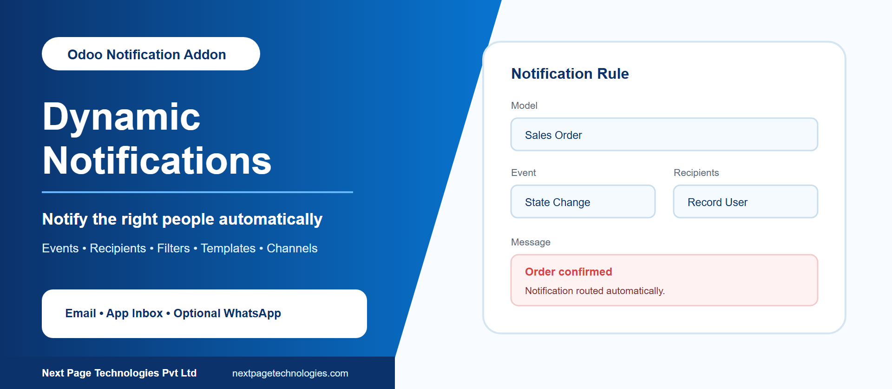
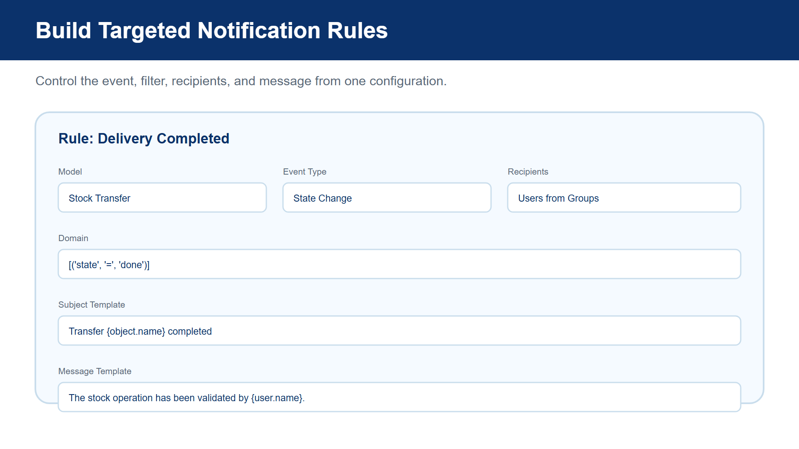
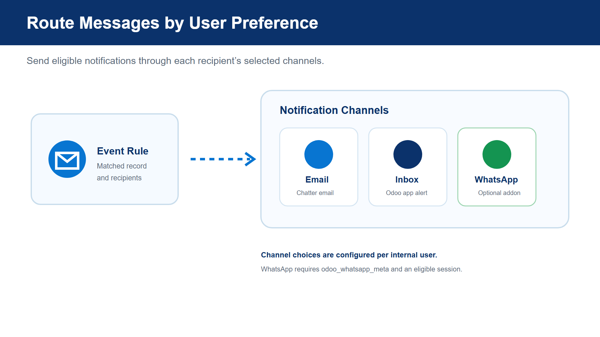

Create configurable event-based notification rules for Odoo records and route them through each user's preferred delivery channels. Rules can react to record creation, updates, selected field changes and custom events, helping teams automate operational alerts without building a separate notification flow for every business case.
The addon supports Odoo email and inbox delivery and can also send WhatsApp messages
when the optional odoo_whatsapp_meta companion module is installed and configured.
Trigger notification rules on record creation, write operations, selected field/state changes, or custom events.
Select the model for each rule and optionally apply a rule to inherited models where supported.
Use an optional Odoo domain to restrict notifications to records matching business conditions.
Send to fixed internal partners, the record's user, a partner/user field on the record, or users belonging to selected security groups.
Users can choose supported dynamic notification channels from their notification preferences.
For records exposing an operation type, rules can be restricted to selected stock operation types.
Define subject and HTML message templates using record, current user and event context.
Export selected notification rules and import rule settings into another database, with options to replace or update matching rules.
Administrators configure the target model, trigger, optional field/domain filters, recipients, stock operation types and message templates. When the configured event occurs and the record matches the rule, the addon prepares and dispatches the notification.

Dynamic notification preferences are available on Odoo users. Email and inbox delivery use
Odoo's mail framework. WhatsApp delivery is enabled only when the optional
odoo_whatsapp_meta module is installed and its WhatsApp service is available.

odoo_whatsapp_meta modulenpt_dynamic_notifications
Next Page Technologies Pvt Ltd
https://nextpagetechnologies.com
Create configurable event-based notifications for Odoo records without hard-coding a separate rule for every workflow. Route messages to selected recipients through email, Odoo inbox, and—when the optional integration is installed—WhatsApp.
Administrators define notification rules for a selected Odoo model and event. Each rule can filter eligible records, choose recipients, render a subject and HTML message from record data, and route delivery according to each user’s notification-channel preferences.
Trigger rules on record creation, write operations, selected field state changes, or custom events.
Notify fixed partners, the record user, a partner or user from a record field, or users belonging to selected groups.
Limit rules with an Odoo domain and optionally filter stock records by configured operation types.
Build subjects and HTML messages with record, current-user, and event placeholders.
Let internal users select Email, App Notification, WhatsApp, or supported combinations through their preferences.
Export selected notification rules to JSON and import them with options to update matches or replace existing rules.
Dynamic Notification rules are managed from the dedicated administrator menu. Rule management and the import wizard are restricted to system administrators. Standard internal users can read available notification channels and update their own channel preferences through supported user settings.
Choose the business model, trigger event, recipient strategy, optional record domain, stock operation types, and message template from one rule form. State-change rules can monitor a specific changed field.
Recipients can receive standard chatter notifications through email or Odoo inbox. When odoo_whatsapp_meta is installed and configured, eligible WhatsApp recipients can receive plain-text versions during a valid messaging session.
odoo_whatsapp_meta addon.Contact Next Page Technologies Pvt Ltd for implementation or support assistance.
Next Page Technologies Pvt Ltd
https://nextpagetechnologies.com